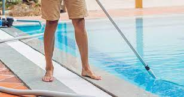

Consejos para el mantenimiento de su piscina
Monitoree regularmente los niveles de pH: Asegúrese de medir el pH del agua al menos dos veces por semana. Los niveles de pH deben estar entre 7.2 y 7.6 para mantener el agua equilibrada y prevenir problemas como irritación de ojos y piel.
Limpie los electrodos: Los electrodos del ionizador pueden acumular residuos y escamas a lo largo del tiempo, lo que puede afectar su rendimiento. Siga las instrucciones del fabricante para limpiar los electrodos de manera regular y mantenerlos en buen estado.
Realice una oxidación periódica: Aunque los ionizadores ayudan a reducir la necesidad de productos químicos, aún puede ser necesario realizar una oxidación periódica para eliminar los contaminantes acumulados. Siga las instrucciones del fabricante o consulte con un profesional de piscinas para determinar la mejor forma de realizar este proceso.
Limpie la piscina regularmente: Asegúrese de limpiar hojas, suciedad y otros desechos de la superficie y el fondo de la piscina de manera regular. Esto ayudará a mantener el agua clara y a reducir la carga de trabajo del ionizador.